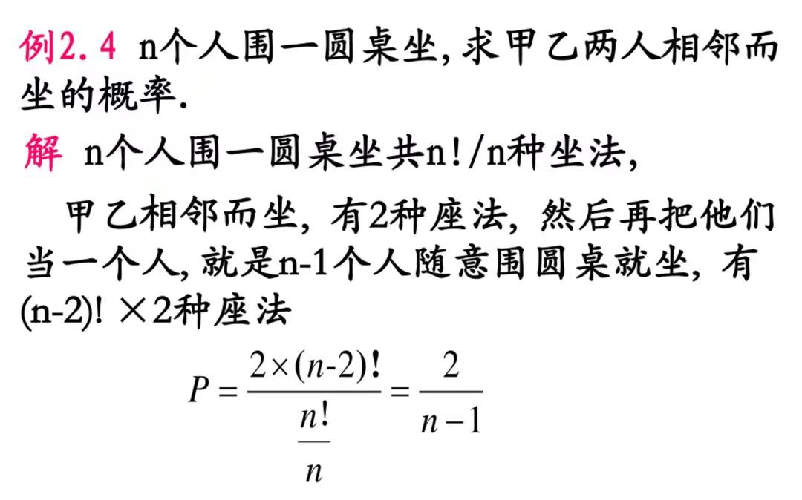
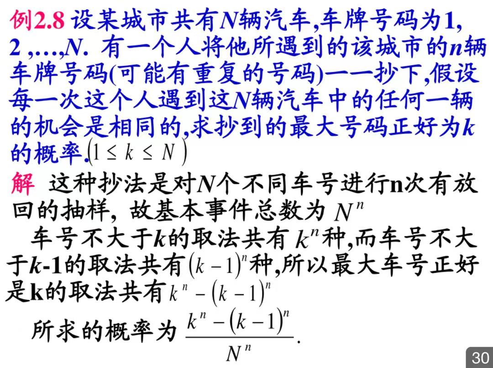
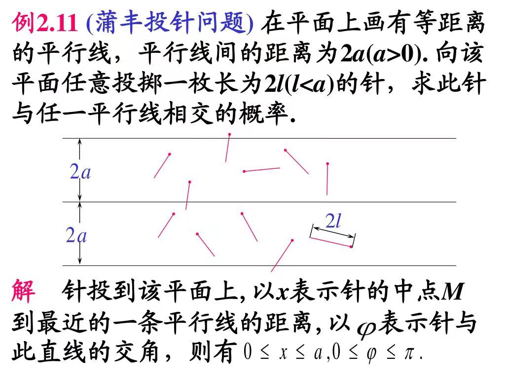
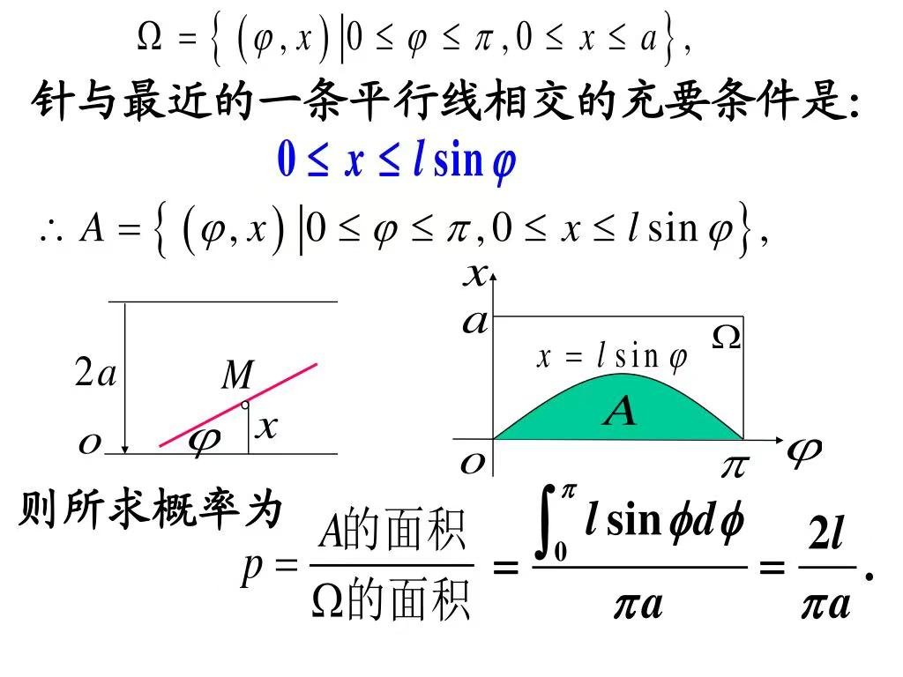
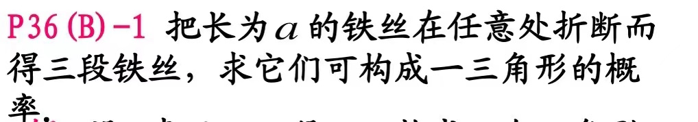
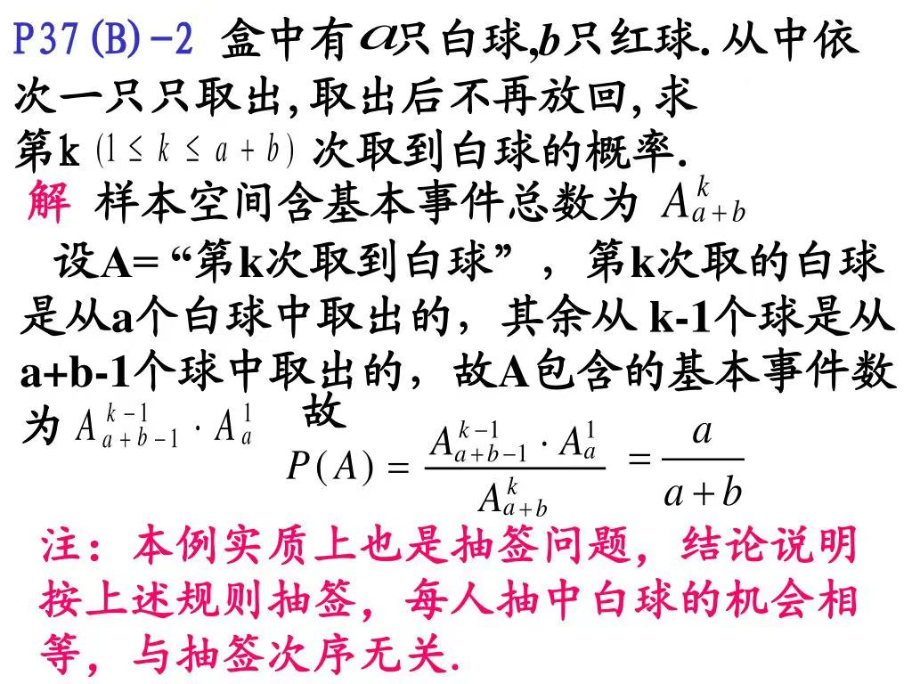

你能算出你入门的概率吗。
第一章 随机事件及其概率论
$\S 1.1 $ 随机试验与随机事件
基本概念
- 我们通常用字母 $E$ 表示一个随机试验。随机试验 $E$ 的基本结果称为样本点，用 $\omega$ 表示。称随机试验 $E$ 的所有基本结果的集合为样本空间，用 $\Omega =\{ \omega\} $ 表示。
- 样本空间 $\Omega$ 的部分子集称为随机试验 $E$ 的随机事件 $A$，若试验结果 $\omega \in A$，则称事件 $A$ 发生。
- 由一个样本点组成的事件称为基本事件。必然发生的事件称为必然事件，不可能发生事件称为不可能事件。
- 有限的样本点的空间称为有限样本空间，无限的样本点的空间称为无限样本空间。
事件关系
- 当 $A$ 发生时 $B$ 一定发生，则 $B$ 包含事件 $A$，记作 $A \subseteq B$。
- 相互包含的事件称为事件相等，记作 $A=B$。
- $A$，$B$ 不能同时发生称为互不相容。
- $A$，$B$ 事件中必有一个发生且不能同时发生称为事件的互逆，它们是 互逆 / 对立 的。其中一个事件是另一个事件的逆事件。记作 $\bar A = B$。显然 $\bar{\bar A} = A$。
随机事件的运算
事件的交，说明两个事件中至少发生一个事件，又称为$A$，$B$ 事件的并事件或和事件，记作 $A \cup B$。
事件的并，说明两个事件中都发生，又称为 $A$，$B$ 事件的交事件或积事件，记作 $A \cap B$。
事件的差，事件 $A$ 发生而 $B$ 不发生，记作 $A-B$。
集合的运算满足结合律，交换律，分配律。这里着重强调一下对偶率。写作 $\bar{A \cup B} = \bar{A}\bar{B}$，$\bar{AB}=\bar A \cup \bar B$。
几个常见结论
$\S 1.2$ 随机事件的概率
频率 & 概率
频（概）率有非负性；对于必然事件，其频（概）率是 $1$；对于互不相容的事件，频（概）率具有可加性。
频率随试验次数的增加趋于稳定，其稳定值作为事件的概率。
对于任一事件，有 $P(\bar A) = 1 - P(A)$。
若 $A \subseteq B$，则有 $P(B - A) = P(B) - P(A)$。
对于任意事件，有 $P(B - A) = P(B) - P(AB)$。
对于任意事件，有 $P(A \cup B) = P(A) + P(B) - P(AB)$。
该公式推广到 $n$ 的情况即是容斥定理。
古典概型
- 基本特点：样本空间只含有限个点且每个样本点的出现是等可能的。称为等可能概型，也称古典概型。


- 几何概型
$P(A) = \dfrac{A 的度量}{\omega 的度量}$


注意这里 $x$ 的范围是 $[0, a]$，所以不用考虑另外一条边。

分别设出第一段，第二段长度 $x$，$y$，然后找出 $x$，$y$，$a$ 之间的关系，画出图像来求几何概率，答案为 $\dfrac{1}{4}$。

确定总事件数和符合的事件数是关键。
$\S 1.3$ 条件概率
- 事件 A 在事件 B 发生下发生的概率是 $P(B | A) = \dfrac{P(AB)}{P(A)}$。
- 对于两两不相容事件，有 $P((\bigcup_{i = 1}^{\infty}B_i) | A) = \sum_{i = 1} ^ {\infty}P(B_i | A)$。
- 常见公式有
$P(\Phi | A) = 0$
$P(\bar B | A) = 1 - P(B | A)$
$P((B_1 \cup B_2) | A) = P(B_1 | A) + P(B_2 | A) - P((B_1B_2) | A)$ - 乘法公式 $P(AB) = P(A | B)P(B) = P(B | A)P(A)$
推广 $P(ABC) = P(A)P(B | A)P(C | AB)$$P(A_1A_2 \dots A_n) = P(A_1)P(A_2 | A_1)P(A_3 | A_1A_2) \dots P(A_n | A_1A_2 \dots A_n)$ - 全概率公式
若事件 $A_1$，$A_2$，$\cdots$，$A_n$ 满足两两互不相容且 $A_1 \cup A_2 \cup \dots A_n = \Omega$，那么称 $A_1$，$A_2$，$\cdots$，$A_n$ 为样本空间的一个分解或完全事件组。则对于事件 $B$，有 $P(B) = \sum_{i = 1}^n P(B | A_i)P(A_i)$。 - 贝叶斯公式
将乘法公式带入全概率公式可得 $P(A_i | B) = \dfrac{P(B | A_i)P(A_i)}{\sum_{j = 1}^n P(B | A_j)P(A_j)}$
贝叶斯公式称为后验概率公式，其中为 $P(A_i | B)$ 后验概率，$P(A_i)$ 为先验概率。
课后习题节选
1.1